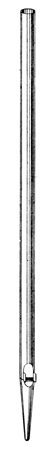

|
Dulcian English Dulciana English Dulciane French |
Dolcean unknown Dolciane French? Dulziana unknown Dulzet unknown |
The true English Dulciana is a diminutive Diapason, smaller in scale, softer and more delicate in tone. It is often the softest stop on the organ in which it is placed. It was introduced to England by John Snetzler in 1754 at the Church of St. Margaret, Lynn Regis (King's Lynn), Norfolk. It brought him great acclaim, and was soon a favorite of English organ builders. Snetzler probably encountered the name while working as a junior builder with Egedacher of Salzburg, Austria. According to Grove, those early Dulcianas were as likely to have been small-scale Dolcans as miniature Diapasons. Grove dates the name from as early as c1640, indicating gentle flue stops of various forms in non-Latin Europe. Eventually English builders apparently grew tired of the tone of the Dulciana, and began voicing it with a stringy tone, or even a horny tone like the Keraulophone. In 1905 Wedgwood wrote without remorse: �the real Dulciana is rapidly becoming obsolete, yielding its place to the Salicional.�
While most sources agree on the definition of the Dulciana as a diminutive Diapason, and not a string, E. M. Skinner saw it differently. Acknowledging its origin as an Echo Diapason, he writes:
Reference has been made to the Dulciana as belonging to the Diapason family, because of its lack of string quality, but this is erroneous as its scale is out of the Diapason range. It may be appraised more accurately as a muted string.
While the earliest examples of the Dulciana, according to Grove, were most often at 4' pitch, since its introduction to England it has most often been found at 8' pitch, though 16' examples are not uncommon, and it is not unknown at 32' and 4' pitch.
Adlung (via Williams) classifies Dulziana as a flue, but all known examples are reeds; see Dulzian.
The names probably derive from the Latin dulcis, �sweet�. The name Dulcian is also a synonym for Dulzian.
See also Dulceon, Echo Diapason and Vox Angelica.
The proper English Dulciana is invariably made of cylindrical open metal pipes of small scale, though the scale does vary considerably. Audsley gives the limits of the scale at 8' C as between 3.0" and 3.65", and maintains that the most useful scales are between 3.25" and 3.125". Wedgwood prefers the larger scales between 3.5" and 4.5", Bonavia-Hunt prefers a maximum scale of 3.5", and Irwin admits to as small as 2.9". Audsley give the following scale details:
| Ratio | 8' C | 4' C | 2' C | 1' C | 1/2' C | 1/4' C |
|---|---|---|---|---|---|---|
| 1:2.519 | 3.25" | 2.05" | 1.29" | 0.81" | 0.51" | 0.32" |
| 1:2.519 | 3.38" | 2.13" | 1.34" | 0.84" | 0.53" | 0.33" |
| 1:2.66 | 3.34" | 2.05" | 1.25" | 0.77" | 0.47" | 0.29" |
| 1:2.66 | 3.48" | 2.13" | 1.31" | 0.80" | 0.49" | 0.30" |
Mouth widths are generally 1/5 to 1/6, cut-ups 1/3 to 1/5. Audsley gives the pipes ears, but cautions that under no circumstances should the pipes ever be slotted, an admonition ignored by many builders. Bonavia-Hunt recommends rollers or beards in the 8' octave for prompter speech. The 8' octave is occasionally made of wood, sometimes stopped wood, and when space or funds are limited, borrowed from another stop, usually the Stopped Diapason. These latter practices are not to be recommended, as it is impossible to get the proper tone from a stopped pipe. The illustration is Wedgwood's; click on it for a larger image.
|
Contra Dulciana Double Dulciana Dulciana Cornet |
Dulciana Celeste Dulcet Dulcetina Dulciana Octave |
Dulciana Principal Echo Dulciana Echo Dulciana Celeste Unda Maris |
Osiris contains about 375 examples of Dulciana, 170 examples of Dulcian, 40 examples of Dulciane (of which two are reeds), and two of Dolciano. No confirmed examples of Dolciane are known, and no examples of Dolcean or Dulzet are known. Contributions welcome.
Dolciane 8', Récit; chamber organ for Alexandre Guilmant; Mutin. This example, cited by Audsley, is the only one known of this name. However, a document issued by Guilmant shows this stop as Dulciane, the usual French spelling, so the Audsley example is probably spurious.
Dolciano 16' (flue), Manual III; Alexander Church, Tampere, Finland; Kangasala 1938.
Dolciano 16', Manual III; Lapua, Finland; Kangasala 1938.
See the Sound Files appendix for general information.
| Dulciana 8', Great | Prudhoe Methodist Church, Northumberland, Scotland | arpeggio | St. Anne | |
| Dulciana 8', Great | St. Anne's Church, Moseley, Birmingham, England | Lewis, 1875 | arpeggio | St. Anne |
|
Original site compiled by Edward L. Stauff. For educational use only. Dulciana.html - Last updated 27 September 2006. |
Home Full Index |